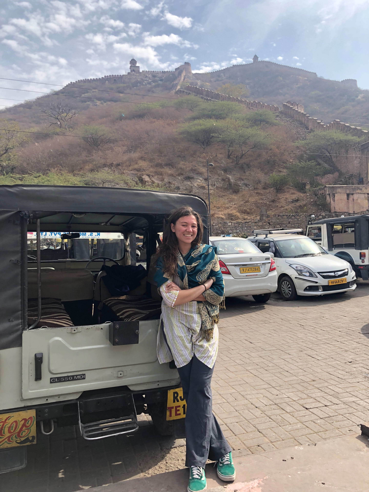

Alyssa's Artisanal Strawberries
Contact Alyssa

Our owner, Alyssa Shteyn, is a Strawberry Quality major at the University of Chicago. She is passionate about high quality strawberries and experimenting with different types of strawberry plants.
You can contact her at:
alyssashteyn@uchicago.edu
+1(314)680-8606